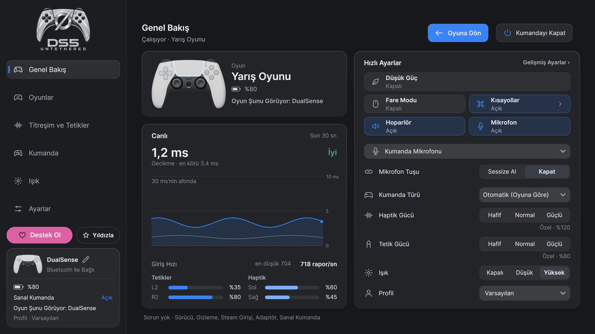

DS5 UntetheredPC'de DualSense haptiği ve adaptif tetikler, Bluetooth'la
DS5 Untethered ücretsiz ve açık kaynak bir Windows uygulaması. Oyun kumandayı kabloyla takılı sanıyor, siz kablosuz oynuyorsunuz.

Sorun
PC'de DualSense'in oyun haptiği yalnızca USB kabloyla bağlıyken çalışır; çoğu oyunda adaptif tetikler de öyle. Bluetooth'ta oyunlar farklı bir cihaz görür: detaylı haptik düz titreşime düşer, çoğu oyun da tetik efektlerini bırakır.
Nasıl çalışıyor
Uygulama kumandaya Bluetooth'la bağlanıyor.
Aynı bilgisayarda kabloyla takılı görünen sanal bir DualSense oluşturuyor. Oyun onunla konuşuyor.
Oyunun haptiği, tetik efektleri ve ışığı Bluetooth'tan gerçek kumandaya aktarılıyor.
DS5 Untethered iki ücretsiz sürücü kullanıyor: usbip-win2 ve HidHide. Kurulum sayfası bunları kontrol edip kumandayı eşleştirirken yol gösteriyor.
Profiller ve hızlı ayar
İsimli profiller
Her profil kendi titreşim, haptik, tetik, ışık ve Sesi Titreşime Çevir ayarlarını saklar; bir oyunun birkaç profili olabilir, örneğin "Yarış" ve "Rahat" adını verdiğiniz iki profil. Oyunlar sayfasında oyunun ayarlarından adını vererek profil oluşturun, sonra yeniden adlandırın ya da çoğaltın. Profiller arasında Genel Bakış'tan ya da oyunun ayarlarından geçin; oyun açıkken yapılan geçiş hemen etki eder. Gerçek kumandada her gün kullanılıyor.
Oyundan çıkmadan ayar değiştirme
Oyun açıkken ø tuşuna kısa basınca uygulama öne gelir ve Fare Modu açılır: dokunmatik yüzey fare olur, basmak tıklamak demek, Sağ Tık isteğe bağlı. Ayarı değiştirip Oyuna Dön'e basınca oyun öne döner, Fare Modu kapanır ve kumanda oyuna geri geçer. Klavye ya da fare gerekmez. Gerçek kumandada denendi.
DualSense desteklemeyen oyunlarda tetik titreşimi
Bazı oyunlar, özellikle yarış oyunları, Xbox kumandanın tetiklerini titretir: gaz, fren, ABS, patinaj. Xbox Tetik Titreşimi açıkken bu oyunlar Xbox Series kumanda alır; oyunun tetik titreşimi Xbox'ın tetik motorlarını taklit ederek DualSense'in kendi tetik motorlarında çalınır. His profile göre seçilir: Xbox Gibi, Yumuşak ya da Keskin. Uygulama bu tür 87 oyunu tanıyor ve yenilerini öğreniyor. Xbox Tetik Titreşimi deneysel ve varsayılan olarak kapalı. Ayarlar > Kumandalar > Tetikler'den ya da Oyunlar sayfasından açılır.
Neler çalışıyor
Gerçek kumandada denendi
- Oyun haptiği
- Adaptif tetikler
- Işık
- Kumandanın mikrofonu ve hoparlörü
- Bluetooth adaptör testi
- DualShock 4 kumanda türü (şimdilik bir oyunda doğrulandı)
- Fare modu: dokunmatik yüzeyle imleç, her basışa tek tık, Sağ Tık ayarı, kısa PS basışıyla açılma, Oyuna Dön
- Uygulama içinden güncelleme
- Xbox ve DS4 Titreşimi ve Sesi Titreşime Çevir (şimdilik kendi haptiği olmayan bir oyunda doğrulandı)
- Adlandırılmış profiller ve oyun başına profiller, günlük kullanımda
Uygulamada var, kodda test edildi, gerçek kumandada henüz doğrulanmadı
- Xbox Series kumanda türü ve Xbox Tetik Titreşimi (deneysel, varsayılan olarak kapalı)
- Oyun kapandıktan sonra süren titreşimin durdurulması; mikrofonun daha az kesilmesi
- Tetik ve haptik gücü
- Tuş atama
- Gyro ile nişan alma
- Fare modunda analogla imleç ve tuş atama
- Işık efektleri
- Oyunlar sayfası: Steam ve Epic'ten bulunan Desteklenen, Xbox Tetik Titreşimi ve Desteklenmeyen oyunlar
- Gerçek kumandanın HidHide ile gizlenmesi
- Yeniden bağlanma, pil uyarısı, boştayken kapanma
- Mikrofon tuşunun ışığı ve bildirimleri, oyunlarda kumanda hoparlörü
- Canlı bağlantı kalitesi
- DualSense Edge; hatırlanan ve adlandırılabilen en çok dört kumanda
- Oyun başına Kumanda Türü: DualSense, DualShock 4, Xbox Series ya da Xbox 360; Otomatik her oyun için kendisi seçiyor
Ekran görüntüleri


DS5 Untethered'ı indirin
DS5 Untethered deponun Releases sayfasında kurulum dosyası ve zip olarak duruyor. .NET ikisinin de içinde olduğundan uygulama için başka bir şey kurmanız gerekmez.
- Kurulum dosyasını (
DS5-Untethered-<sürüm>-Setup.exe, yalnızca sizin hesabınıza kurar, yönetici izni istemez) ya da zip'i (DS5-Untethered-<sürüm>-win-x64.zip, istediğiniz yere açıpKopru.App.exe'yi çalıştırın) indirin. - Derleme imzalı olmadığından Windows SmartScreen uyarı gösterebilir. "Ek bilgi"ye, ardından "Yine de çalıştır"a tıklayın.
- Kurulum sayfası iki sürücünün, usbip-win2 ile HidHide'ın kurulu olup olmadığına bakar ve resmi indirme sayfalarını açar (kurulum programları yönetici izni ister). İki sürücü de kurulmadan sanal kumanda başlamaz.
- Ardından kumandayı Bluetooth'la eşleştirirken size yol gösterir.
Gereksinimler
- Windows 10 ya da 11
- Bluetooth adaptörü, dahili ya da USB
- usbip-win2 ve HidHide, ikisi de ücretsiz
Sık sorulanlar
DualSense'in haptiği ve adaptif tetikleri PC'de Bluetooth'la çalışır mı?
Kendi başına tam çalışmaz: oyunlar detaylı haptiği yalnızca kabloyla bağlı kumandaya yollar, çoğu oyun tetik efektlerini de yalnızca o zaman gönderir. Bluetooth'ta haptik düz titreşime düşer. DS5 Untethered açıkken oyun kabloyla takılı bir DualSense görür, haptik ve tetik efektleri de Bluetooth'tan kumandaya ulaşır.
Bazı oyunlarımda Bluetooth'ta zaten titreşim ve tetikler çalışıyor. Buna neden ihtiyacım olsun?
Bazı oyunlar Bluetooth'ta da kendiliğinden adaptif tetik efektleri ve basit titreşim gönderir. Detaylı, sese dayalı haptik ise normalde yalnızca kabloyla bağlı kumandaya gider; Bluetooth'ta düz titreşim alırsınız. DS5 Untethered oyuna kabloyla bağlı bir kumanda gösterir; böylece tam haptiği kablosuz alırsınız, Bluetooth'ta hiçbir DualSense özelliği sunmayan oyunlarda da.
Dongle ya da ek donanım gerekiyor mu?
Özel bir donanım gerekmiyor. Bilgisayarın kendi Bluetooth'u ya da sıradan bir USB Bluetooth adaptörü yetiyor. Kurulum sayfası adaptörü test ediyor.
Gecikme ekliyor mu?
Tek kumanda ve tek adaptörle yapılan 60 saniyelik testte girdi yaklaşık 750 Hz'de, düşük ek gecikmeyle ve kayıpsız aktarıldı. Genel Bakış sayfası gecikmeyi canlı gösteriyor, kendi kurulumunuzda bakabilirsiniz.
Hangi oyunlarda çalışır?
DualSense'in haptiğini ya da adaptif tetiklerini USB kabloyla destekleyen oyunlarda. Bilinen oyunlar uygulamadaki Oyunlar sayfasında, Desteklenen bölümünde listeleniyor. DualSense desteklemeyen oyunlarda Xbox ve DS4 Titreşimi ayarları ya da Sesi Titreşime Çevir kullanılabilir. Xbox tetik titreşimi kullanan oyunlar, özellikle yarış oyunları, deneysel Xbox Tetik Titreşimi ayarıyla (varsayılan olarak kapalı) bunu DualSense tetiklerinde çalabilir.
Oyundan çıkmadan ayar değiştirebilir miyim?
Evet. Oyun açıkken ø tuşuna kısa basınca uygulama Fare Modu açık olarak öne gelir, dokunmatik yüzey fare olur. Oyuna Dön oyunu geri getirir ve Fare Modu'nu kapatır.
Ücretli mi?
Hayır. DS5 Untethered ücretsiz ve açık kaynak (GPL-3.0), ücretli sürümü yok.